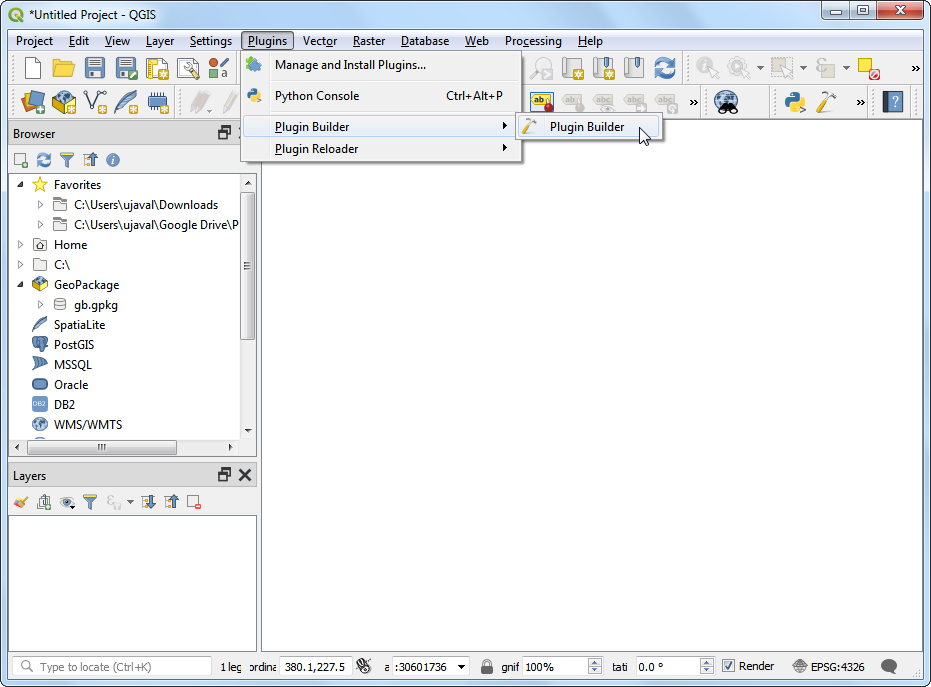
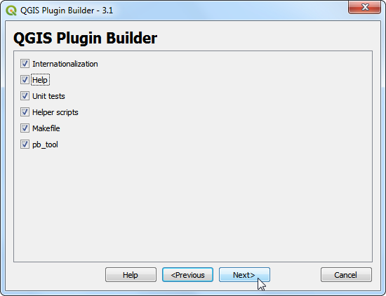
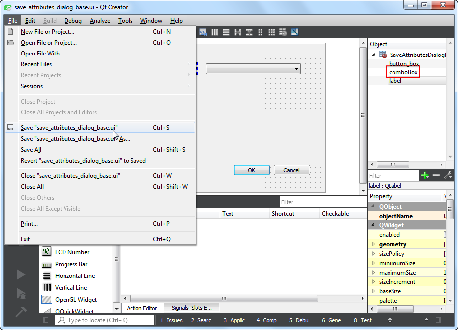
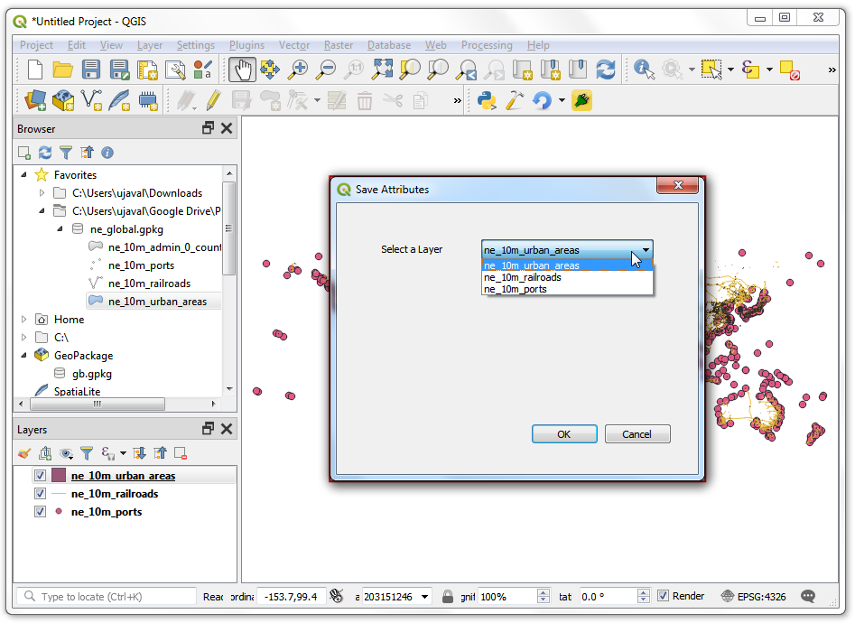

Ujaval Gandhi
Ujaval GandhiConstruirea unui Plugin Python (QGIS3)¶
Plugin-urile reprezintă o modalitate foarte bună de a extinde funcționalitatea QGIS. Puteți scrie plugin-uri care folosesc Python, începând cu adăugarea unui simplu buton până la realizarea unor instrumente sofisticate. Acest tutorial pune accent pe instalarea mediului de dezvoltare, proiectarea interfeței grafice a unui plugin și scrierea codului necesar interacțiunii cu aplicația QGIS. Este indicat să parcurgeți Noțiuni de Bază Despre Programarea în Python (QGIS3) pentru a vă familiariza cu elementele de bază.
Notă
If you are building a new plugin, I strongly recommend building a Processing Plugin instead of the GUI plugin described in this tutorial. See Construirea unui Plugin de Procesare (QGIS3) for details.
Privire de ansamblu asupra activității¶
Vom dezvolta un plugin simplu numit Salvare Atribute, care va permite utilizatorilor alegerea unui strat vectorial, apoi înscrierea atributelor sale într-un fișier CSV.
Obținerea instrumentelor¶
Qt Creator¶
Qt este un cadru de dezvoltare de software folosit la construirea de aplicații care pot rula pe Windows, Mac, Linux, precum și pe diferite sisteme de operare mobile. Însuși QGIS este scris cu ajutorul Qt. Pentru proiectarea interfeței plugin-urilor vom utiliza aplicația Qt Creator.
Descărcați și instalați programul de instalare al aplicației Qt Creator din Qt Offline Installers. Asigurați-vă că ați selectat Qt Creator în pagina de descărcare. Rețineți că va trebui să vă creați un cont Qt gratuit pentru a putea instala pachetul.
Notă
Programul de instalare OSGeo4w pentru QGIS pe Windows include o copie a programului Qt Designer, care reprezintă o versiune de Qt Creator simplificată, perfect adecvată construirii de plugin-uri. Puteți omite descărcarea Qt Creator și să folosiți în schimb .

Conectarea Python la Qt¶
Din moment ce dezvoltăm un plugin în Python, trebuie să instalăm legăturile Python pentru Qt. Metoda de instalare a acestora va depinde de platforma pe care o utilizați. Pentru construirea plugin-urilor avem nevoie de instrumentul în linie de comandă pyrcc5.
Windows
Relevant python bindings are included in the QGIS install on Windows. But to use them from the plugin folder, we need to indicate the path to the QGIS install.
Creați un fișier de comenzi Windows (cu extensia .bat) în care inserați următorul conținut, apoi salvați-l pe computerul dvs. sub denumirea de compile.bat. Ulterior vom copia acest fișier în folderul pluginului. Dacă ați instalat QGIS într-o altă locație, înlocuiți C:\OSGeo4W64\bin\ cu calea dvs.
@echo off
call "C:\OSGeo4W64\bin\o4w_env.bat"
call "C:\OSGeo4W64\bin\qt5_env.bat"
call "C:\OSGeo4W64\bin\py3_env.bat"
@echo on
pyrcc5 -o resources.py resources.qrc
Mac
Instalați managerul de pachete Homebrew. Instalați pachetul PyQt, prin rularea următoarei comenzi:
brew install pyqt
- Linux
În funcție de distribuția dvs., găsiți și instalați pachetul
python-q5. În distribuțiile bazate pe Ubuntu și Debian, aveți posibilitatea să executați următoarea comandă:
sudo apt-get install python-qt5
Notă
Este posibil să descoperiți că în QGIS acest pachet este instalat deja.
Un Editor de Text sau un IDE Python¶
Orice fel de dezvoltare software necesită un editor de text bun. Dacă aveți deja un editor de text favorit sau un IDE (Mediu Integrat de Dezvoltare), îl puteți folosi pentru acest tutorial. În caz contrar, fiecare platformă oferă o largă varietate de opțiuni gratuite, sau plătite, de editoare de text. Alegeți una care se potrivește nevoilor dumneavoastră.
Acest tutorial folosește editorul Notepad++ pe Windows.
Windows
Notepad++ este un bun editor gratuit pentru Windows. Descărcați și instalați editorul Notepad++ <https://notepad-plus-plus.org/download/>`_.
Notă
Dacă utilizați Notepad++, asigurați-vă că ați bifat Înlocuiește cu spațiu gol în . Python este foarte sensibil la spațiile albe, iar această setare vă asigură că tab-urile și spațiile sunt tratate în mod corespunzător.
Plugin Builder¶
Există un plugin QGIS util, denumit Plugin Builder, care creează toate fișierele necesare și șabloanele de cod necesare unui plugin. Găsiți și instalați Plugin Builder. Parcurgeți Utilizarea Plugin-urilor pentru mai multe detalii despre instalarea pluginurilor.
Plugins Reloader¶
Acesta este un alt plugin util, care permite dezvoltarea iterativă a plugin-urilor. Folosiți-l pentru a beneficia de răspunsul imediat la orice modificare de cod, fără a reporni QGIS de fiecare dată. Găsiți și instalați Plugin Reloader. Parcurgeți Utilizarea Plugin-urilor pentru mai multe detalii despre instalarea pluginurilor.
Notă
Plugin Reloader este un plugin experimental. Dacă nu-l puteți găsi, asigurați-vă că este bifată, în setările Managerului de Plugin-uri, Afișarea Pluginurilor experimentale.
Procedura¶
Deschideți QGIS. Mergeți la .

Veți vedea un formular în interiorul ferestrei QGIS Plugin Builder. Puteți completa formularul cu datele referitoare la viitorul plugin. La Numele clasei se va specifica clasa Python care conține logica pluginului. Aceeași denumire se va utiliza pentru folderul care conține toate fișierele pluginului. Introduceți
SaveAttributesca nume al clasei. Numele Pluginului reprezintă denumirea sub care pluginul se va regăsi în Managerul de Pluginuri. Introduceți denumireaSave Attributes. Adăugați o descriere în câmpul Descriere. Numele modulului reprezintă numele principalului fișier python al pluginului. Introduceți denumireasave_attributes. Lăsați numerele de versiune așa cum sunt, apoi introduceți numele și adresa de email în câmpurile corespunzătoare. Clic pe Next.

Introduceți o scurtă descriere a pluginului în fereastra de dialog About apoi apăsați pe OK.

Select the
Tool button with dialogfrom the Template selector`. The Text for menu item value will be how the users will find your plugin in QGIS menu. Enter it asSave Attributes as CSV. The Menu field will decide where your plugin item is added in QGIS. Since our plugin is for vector data, selectVector. Click Next.

Plugin builder will prompt you for the type of files to generate. Keep the default selection and click Next.

As we do not intend to publish the plugin, you may leave the Bug tracker, Repository and Home page values to default. Check the Flag the plugin as experimental box at the bottom and click Next.

You will be prompted to choose a directory for your plugin. For now, save it to a directory you can locate easily on your computer and click Generate.

Next, press the generate button. You will see a confirmation dialog once your plugin template is created.

Notă
You may get a prompt saying that pyrcc5 is not found in the path. You can ignore this message.
Before we can use the newly created plugin, we need to compile the
resources.qrcfile that was created by Plugin Builder. This file is part of the Qt Resource System which references all binary files used in the plugin. For this plugin, it will only have the plugin icon. Compiling this file generates application code that can be used in the plugin independent which platform the plugin is being run. Follow the platform specific instruction for this step.
Windows
You can now copy the compile.bat file (created during the Python Bindings for Qt section at the start) to the plugin folder. Once copied, double-click the file to run it. If the run was successful, you will see a new file called resources.py in the folder.

Notă
If this step fails, you can launch cmd.exe and browse to the plugin folder using cd command. Run the Batch file by running compile.bat to see the error.
Mac și Linux
You will need to install pb_tool first. Open a Terminal and install it via pip.
sudo pip3 install pb_tool
Open a Terminal and go to the plugin directory and type pb_tool compile. This will run the pyrcc5 command that we had installed as part Python Bindings for Qt section.
pb_tool compile
Plugins in QGIS are stored in a special folder. We must copy our plugin directory to that folder before it can be used. In QGIS, locate your current profile folder by going to .

In the profile folder, copy the plugin folder to subfolder.

Now we are ready to have a first look at the brand new plugin we created. Close QGIS and launch it again. Go to and enable the
Save Attributesplugin in the Installed tab.

You will notice that there is a new icon in the plugin toolbar and a new menu entry under . Select it to launch the plugin dialog.

You will notice a new blank dialog named Save Attributes. Close this dialog.

We will now design our dialog box and add some user interface elements to it. Open the
Qt Creatorprogram and go to .

Browse to the plugin directory and select the
save_attributes_dialog_base.uifile. Click Open.

Notă
Windows hides the AppData folder so you may not see it in the file selector dialog. You can enter AppData in the File name prompt from its parent directory to open it.
You will see the blank dialog from the plugin. You can drag-and-drop elements from the left-hand panel on the dialog. We will add a Combo Box type of Input Widgets. Drag it to the plugin dialog.

Resize the combo box and adjust its size. Now drag a Label type Display Widget on the dialog.

Click on the label text and enter
Select a layer.

Save this file by going to . Note the name of the combo box object is
comboBox. To interact with this object using python code, we will have to refer to it by this name.

Let’s reload our plugin so we can see the changes in the dialog window. Go to . Select
SaveAttributesin the Configure Plugin reloader dialog.

Click the Reload plugin button to load the latest version of the plugin. Click the Save Attributes as CSV button to open the newly designed dialog box.

Let’s add some logic to the plugin that will populate the combo box with the layers loaded in QGIS. Go to the plugin directory and load the file
save_attributes.pyin a text editor. First, insert at the top of the file with the other imports:from qgis.core import QgsProject
Then scroll down to the end and find the
run(self)method. This method will be called when you click the toolbar button or select the plugin menu item. Add the following code at the beginning of the method. This code gets the layers loaded in QGIS and adds it to thecomboBoxobject from the plugin dialog.# Fetch the currently loaded layers layers = QgsProject.instance().layerTreeRoot().children() # Clear the contents of the comboBox from previous runs self.dlg.comboBox.clear() # Populate the comboBox with names of all the loaded layers self.dlg.comboBox.addItems([layer.name() for layer in layers])


Back in the main QGIS window, reload the plugin by clicking on the Reload plugin button. To test this new functionality, we must load some layers in QGIS. After you have loaded some layers, launch the plugin by going to . You will see that our combo box is now populated with the layer names that are loaded in QGIS.

Let’s add the remaining user interface elements. Switch back to Qt Creator and load the
save_attributes_dialog_base.uifile. Add aLabelDisplay Widget and change the text toSelect output file. Add aLineEdittype Input Widget that will show the output file path that the user has chosen. Next, add aPush Buttontype Button and change the button label to.... Note the object names of the widgets that we will have to use to interact with them. Save the file.

We will now add python code to open a file browser when the user clicks the
...push button and show the select path in the line edit widget. Open thesave_attributes.pyfile in a text editor. AddQFileDialogtoQtWidgetslist of imports at the top of the file.

Add a new method called
select_output_filewith the following code. This code will open a file browser and populate the line edit widget with the path of the file that the user chose. Note, howgetSaveFileNamereturns a tuple with the filename and the filter used.
def select_output_file(self): filename, _filter = QFileDialog.getSaveFileName( self.dlg, "Select output file ","", '*.csv') self.dlg.lineEdit.setText(filename)
Now we need to add code so that when the … button is clicked,
select_output_filemethod is called. Scroll down to therunmethod and add the following line in the block where the dialog is initialized. This code will connect theselect_output_filemethod to theclickedsignal of the push button widget.
self.dlg.pushButton.clicked.connect(self.select_output_file)
Back in QGIS, reload the plugin and run it. If all went fine, you will be able to click the
...button and select an output text file from your disk.

Când faceți clic pe OK din dialogul plugin-ului, nu se întâmplă nimic. Asta pentru că nu am adăugat logica de extragere a informațiilor atributelor stratului, și pentru a le scrie în fișierul text. Avem acum toate piesele la locul lor, doar pentru a face asta. Găsiți locul din metoda
rununde scriepass. Înlocuiți-l cu codul de mai jos. Explicațiile acestui cod pot fi găsite în Noțiuni de Bază Despre Programarea în Python (QGIS3).filename = self.dlg.lineEdit.text() with open(filename, 'w') as output_file: selectedLayerIndex = self.dlg.comboBox.currentIndex() selectedLayer = layers[selectedLayerIndex].layer() fieldnames = [field.name() for field in selectedLayer.fields()] # write header line = ','.join(name for name in fieldnames) + '\n' output_file.write(line) # write feature attributes for f in selectedLayer.getFeatures(): line = ','.join(str(f[name]) for name in fieldnames) + '\n' output_file.write(line)

We have one last thing to add. When the operation finishes successfully, we should indicate the same to the user. The preferred way to give notifications to the user in QGIS is via the
self.iface.messageBar().pushMessage()method. AddQgistoqgis.corelist of imports at the top of the file and add the code below at the end of therunmethod.
self.iface.messageBar().pushMessage( "Success", "Output file written at " + filename, level=Qgis.Success, duration=3)

Now our plugin is ready. Reload the plugin and try it out. You will find that the output text file you chose will have the attributes from the vector layer.

You can zip the plugin directory and share it with your users. They can unzip the contents to their plugin directory and try out your plugin. If this was a real plugin, you would upload it to the QGIS Plugin Repository so that all QGIS users will be able to find and download your plugin.
Notă
This plugin is for demonstration purpose only. Do not publish this plugin or upload it to the QGIS plugin repository.
Below is the full save_attributes.py file as a reference.
# -*- coding: utf-8 -*-
"""
/***************************************************************************
SaveAttributes
A QGIS plugin
This plugin saves the attributes of the selected vector layer as a CSV file.
Generated by Plugin Builder: http://g-sherman.github.io/Qgis-Plugin-Builder/
-------------------
begin : 2019-03-28
git sha : $Format:%H$
copyright : (C) 2019 by Ujaval Gandhi
email : ujaval@spatialthoughts.com
***************************************************************************/
/***************************************************************************
* *
* This program is free software; you can redistribute it and/or modify *
* it under the terms of the GNU General Public License as published by *
* the Free Software Foundation; either version 2 of the License, or *
* (at your option) any later version. *
* *
***************************************************************************/
"""
from PyQt5.QtCore import QSettings, QTranslator, qVersion, QCoreApplication
from PyQt5.QtGui import QIcon
from PyQt5.QtWidgets import QAction, QFileDialog
from qgis.core import QgsProject, Qgis
# Initialize Qt resources from file resources.py
from .resources import *
# Import the code for the dialog
from .save_attributes_dialog import SaveAttributesDialog
import os.path
class SaveAttributes:
"""QGIS Plugin Implementation."""
def __init__(self, iface):
"""Constructor.
:param iface: An interface instance that will be passed to this class
which provides the hook by which you can manipulate the QGIS
application at run time.
:type iface: QgsInterface
"""
# Save reference to the QGIS interface
self.iface = iface
# initialize plugin directory
self.plugin_dir = os.path.dirname(__file__)
# initialize locale
locale = QSettings().value('locale/userLocale')[0:2]
locale_path = os.path.join(
self.plugin_dir,
'i18n',
'SaveAttributes_{}.qm'.format(locale))
if os.path.exists(locale_path):
self.translator = QTranslator()
self.translator.load(locale_path)
if qVersion() > '4.3.3':
QCoreApplication.installTranslator(self.translator)
# Declare instance attributes
self.actions = []
self.menu = self.tr(u'&Save Attributes')
# Check if plugin was started the first time in current QGIS session
# Must be set in initGui() to survive plugin reloads
self.first_start = None
# noinspection PyMethodMayBeStatic
def tr(self, message):
"""Get the translation for a string using Qt translation API.
We implement this ourselves since we do not inherit QObject.
:param message: String for translation.
:type message: str, QString
:returns: Translated version of message.
:rtype: QString
"""
# noinspection PyTypeChecker,PyArgumentList,PyCallByClass
return QCoreApplication.translate('SaveAttributes', message)
def add_action(
self,
icon_path,
text,
callback,
enabled_flag=True,
add_to_menu=True,
add_to_toolbar=True,
status_tip=None,
whats_this=None,
parent=None):
"""Add a toolbar icon to the toolbar.
:param icon_path: Path to the icon for this action. Can be a resource
path (e.g. ':/plugins/foo/bar.png') or a normal file system path.
:type icon_path: str
:param text: Text that should be shown in menu items for this action.
:type text: str
:param callback: Function to be called when the action is triggered.
:type callback: function
:param enabled_flag: A flag indicating if the action should be enabled
by default. Defaults to True.
:type enabled_flag: bool
:param add_to_menu: Flag indicating whether the action should also
be added to the menu. Defaults to True.
:type add_to_menu: bool
:param add_to_toolbar: Flag indicating whether the action should also
be added to the toolbar. Defaults to True.
:type add_to_toolbar: bool
:param status_tip: Optional text to show in a popup when mouse pointer
hovers over the action.
:type status_tip: str
:param parent: Parent widget for the new action. Defaults None.
:type parent: QWidget
:param whats_this: Optional text to show in the status bar when the
mouse pointer hovers over the action.
:returns: The action that was created. Note that the action is also
added to self.actions list.
:rtype: QAction
"""
icon = QIcon(icon_path)
action = QAction(icon, text, parent)
action.triggered.connect(callback)
action.setEnabled(enabled_flag)
if status_tip is not None:
action.setStatusTip(status_tip)
if whats_this is not None:
action.setWhatsThis(whats_this)
if add_to_toolbar:
# Adds plugin icon to Plugins toolbar
self.iface.addToolBarIcon(action)
if add_to_menu:
self.iface.addPluginToVectorMenu(
self.menu,
action)
self.actions.append(action)
return action
def initGui(self):
"""Create the menu entries and toolbar icons inside the QGIS GUI."""
icon_path = ':/plugins/save_attributes/icon.png'
self.add_action(
icon_path,
text=self.tr(u'Save Attributes as CSV'),
callback=self.run,
parent=self.iface.mainWindow())
# will be set False in run()
self.first_start = True
def unload(self):
"""Removes the plugin menu item and icon from QGIS GUI."""
for action in self.actions:
self.iface.removePluginVectorMenu(
self.tr(u'&Save Attributes'),
action)
self.iface.removeToolBarIcon(action)
def select_output_file(self):
filename, _filter = QFileDialog.getSaveFileName(
self.dlg, "Select output file ","", '*.csv')
self.dlg.lineEdit.setText(filename)
def run(self):
"""Run method that performs all the real work"""
# Create the dialog with elements (after translation) and keep reference
# Only create GUI ONCE in callback, so that it will only load when the plugin is started
if self.first_start == True:
self.first_start = False
self.dlg = SaveAttributesDialog()
self.dlg.pushButton.clicked.connect(self.select_output_file)
# Fetch the currently loaded layers
layers = QgsProject.instance().layerTreeRoot().children()
# Clear the contents of the comboBox and lineEdit from previous runs
self.dlg.comboBox.clear()
self.dlg.lineEdit.clear()
# Populate the comboBox with names of all the loaded layers
self.dlg.comboBox.addItems([layer.name() for layer in layers])
# show the dialog
self.dlg.show()
# Run the dialog event loop
result = self.dlg.exec_()
# See if OK was pressed
if result:
filename = self.dlg.lineEdit.text()
with open(filename, 'w') as output_file:
selectedLayerIndex = self.dlg.comboBox.currentIndex()
selectedLayer = layers[selectedLayerIndex].layer()
fieldnames = [field.name() for field in selectedLayer.fields()]
# write header
line = ','.join(name for name in fieldnames) + '\n'
output_file.write(line)
# write feature attributes
for f in selectedLayer.getFeatures():
line = ','.join(str(f[name]) for name in fieldnames) + '\n'
output_file.write(line)
self.iface.messageBar().pushMessage(
"Success", "Output file written at " + filename,
level=Qgis.Success, duration=3)
If you want to give feedback or share your experience with this tutorial, please comment below. (requires GitHub account)